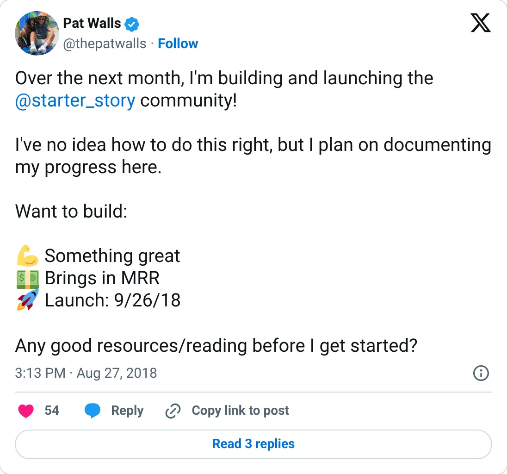
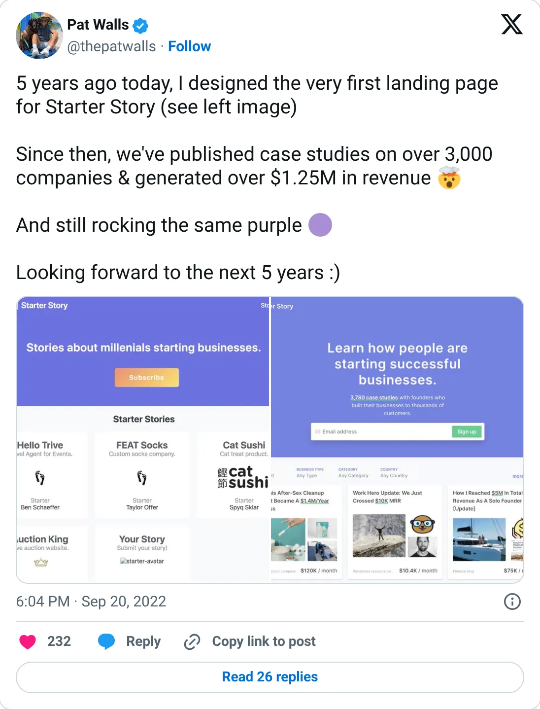

Not a pick
Starter Story
A real-looking company with a headline you should not plan against.
$46K revenue in Dec 2020 · $1.25M+ all-time (Sep 2022)
Should you build this
The company may be real. The figure on the card is a peak, a stale year, a cash month, or an average. Starter Story's latest exact month in this report is December 2020: $46K of revenue and 640K visitors. The other number is cumulative, $1.25M+ all-time by September 2022. Pat Walls built a real media property. Neither figure is “monthly revenue” in October 2026. A fat traffic month from six years ago, plus a lifetime total, is a résumé. It is not MRR.
Cited from the captured posts, shown below: the earliest captured post (Aug 27, 2018) is the source for “Building and launching the community”; the latest milestone (Sep 20, 2022) is the source for “5 years: 3,000+ case studies, $1.25M+ total revenue”.
Posts this is based on

Building and launching the community
Open on X

5 years: 3,000+ case studies, $1.25M+ total revenue
Open on X
What the product is
Case-study library and community: interviews with founders about how they started and grew profitable businesses.
⚠ Older: latest exact figure is from 2022.